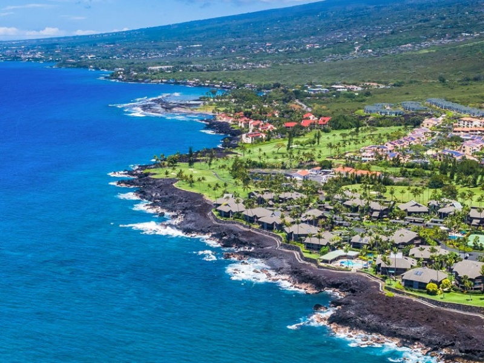
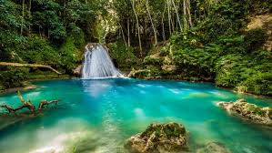

Samoa
Hera asfeasfjskdfhjdashfmiadshfjcnlkhlfhhflasfhglasgfhhsfjbsdjbcksbvksbncvjbsdvjksbdvksblzjcdkljzhgbflhzsgfisgdefliuagfiugailusgfilugasfiugesf
Travel
Fly away with us to the beautiful parts of the World
Here are the best places to see when visiting Samoa
Here are the best places to see when visiting Hawaii
Here are the best places to see when visiting Jamaica
Hera asfeasfjskdfhjdashfmiadshfjcnlkhlfhhflasfhglasgfhhsfjbsdjbcksbvksbncvjbsdvjksbdvksblzjcdkljzhgbflhzsgfisgdefliuagfiugailusgfilugasfiugesf
The beautiful Hawaii is composed of 8 islands, but some personal favorites; The big island Hawai'i, Maui, and O'ahu. Each island consisting of its own popular cities, tourist spots, and foods.
The Big Island Hawaii the biggest island out of the set, hosting one the popular cities Kailua-Kona, also just called Kona (it's also the islands capital) This city is full of amazing things to do and see some of the most popular being Manta ray sightings and ofcourse lounging or surfing on some of the best beaches; Hapuna and Mauna kea. The famous Kona coffee house also lives here and is the most visited tourist sight. All food is a favorite here, most frequented is the coffee and anything grilled
Maui, sort of in the middle of the islands but sits closer to the Big Island. It has a dense population Its main city being Kahului which host the islands main Airport and its main attraction being the Maui Nui Botanical Gardens. With 7 acres of both native and exoctic plants of all kinds, it really is one of the cities most beautiful attractions. The cities most popular food is anything with fish and seafood the top being shrimp and ahi.
O'ahu, the island that sits 2nd to last of the set. Host Honolulu, one of the most popular cities of the island, with just under 250k visitors each year alot of which come to see one of the cities greatest monuments, the Pearl Harbor Memorial. Other monuments include Diamond Head, one of the many dormant volcanos of the islands; Hanauma Bay, one of the beautiful beaches that host turtle adventures Some of the best food includes, Poke and ofcourse Spam Musubi


PARAGRAPH HERE
======= >>>>>>> 71bb6c3efe42de55b4934bcc19610ee9a11b8797If you are ever looking for a place of warmth, happiness, and adventure, then Jamaica should be your next vacation destination. The beautiful island has become one of the most popular vacation spots in the western hemisphere for so many reasons. The food, beaches, music, and unique culture are just some of the reasons why people from all over the world rush to visit. Everyone should visit Jamaica at least once. Jamaica is known for its exotic and delicious cuisine. The island is the home of jerk chicken, undoubtedly Jamaica’s most loved meal by people around the world. Jamaica has also popularized beef patties and introduced the world to Ackee and Saltfish, the Jamaican national dish. There is also a unique mix of fruits, vegetables, and seafood dishes that you must try.


Taipei 101, formerly known as the "Taipei World Financial Center" is a must see destination when traveling to Taiwan. Located in the Xinyi District, this super tall skyscraper was known as the worlds tallest building from 2004 to 2010 until Burj Khalifa took the record. In 2011 Taipei 101 received a platinum rating for becoming the tallest and largest green building in the world. This building contains 101 floors and has elavators that travel from floor to floor at a max speed of 37.7 mph. At the top of this building is a miraculous view which really highlights all of Xinyi District at night.
Mango Shaved Ice
This delicacy is a treat during Taiwan's hot tropical weather. You can find a shop selling shaved ice at almost any corner in Taipei.
Because mangos are grown in Taiwan you get the freshest fruit in your dessert and can taste the juiciness of the fruit.
Not a fan of mango? NO WORRIES! There are many other flavors such as strawberry, matcha and chocolate.
Beef Noodle Soup
fun fact #1
fun fact #2
fun fact #3